Overview
This project is about flow matching.
In Part A I use a pretrained text-to-image flow model
(PixNerd, 512×512)
to denoise images, sample from noise, apply classifier-free guidance, edit images,
and make visual anagrams and hybrid images. In Part B I build a UNet
from scratch and train it on MNIST to generate new images.
Contents:
Part A: Exploring the Power of Flow Models |
Part B: Flow Matching from Scratch
|
Part A: Exploring the Power of Flow Models
Unless noted otherwise, everything in Part A uses random seed 180,
Euler step size h = 0.02, and CFG weight w = 7. Images are
center-cropped and resized to 512×512. For Sections 1.1–1.5 I use a
photo of a Kirby! (best Smash character btw)
|
1: Visualizing Training and Sampling
1.1 Constructing Noisy Training Inputs
The noisy input at time t is a linear interpolation between a noise
sample ε ~ N(0, I) and the clean image x1.
I sample one noise tensor and reuse it at t = 0.25, 0.50, 0.75. t = 0 returns just noise and
t = 1 returns the image.
|
def interpolate(image, noise, t):
return (1 - t) * noise + t * image
|
|
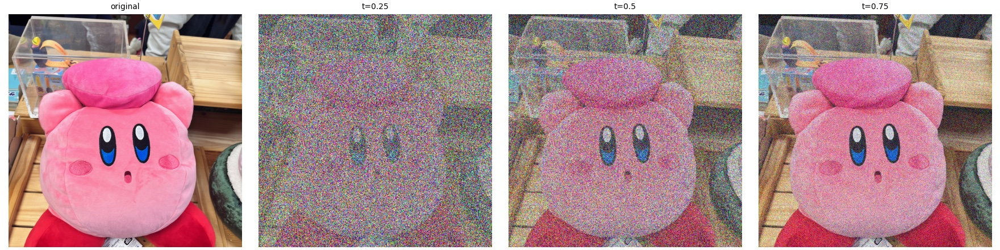
Original, then noisy inputs at t = 0.25, 0.50, 0.75
|
1.2 Classical Denoising
As a baseline, I first rescale each noisy input by 1/t to restore the
image amplitude, then Gaussian-blur it. I swept
σ ∈ {1, 2, 4, 8, 16} and kept the one with the lowest MSE to
the clean image. The noisier the input, the more blur it needs (σ = 8
at t = 0.25, 4 at 0.50, 2 at
0.75).
|
|
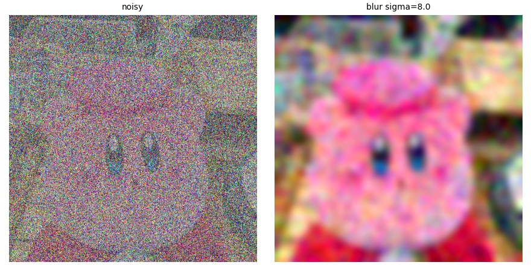
t = 0.25 (σ = 8)
|
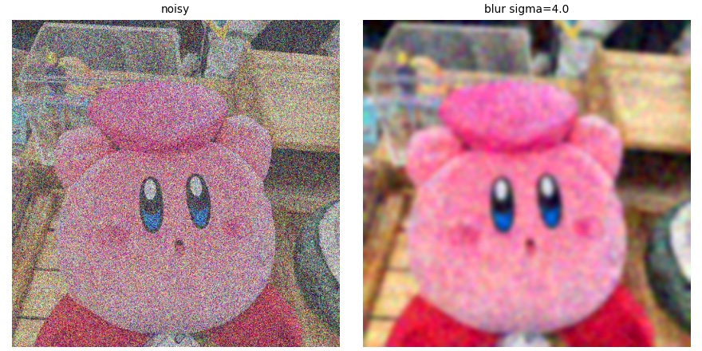
t = 0.50 (σ = 4)
|
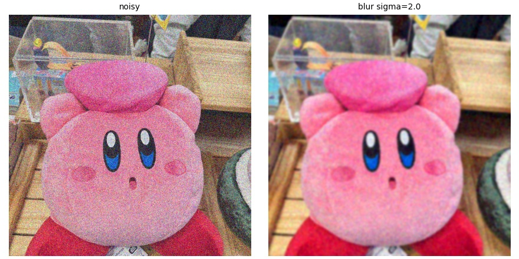
t = 0.75 (σ = 2)
|
1.3 One-Step Denoising
The flow model predicts the velocity vθ(xt, t, c),
an estimate of x1 − ε. Taking a single step of
length 1−t along it gives an estimate of the clean image:
x̂1 = xt + (1−t)·vθ.
I condition on the prompt “a high quality photo”.
|
def one_step_denoise(x, t, condition, predict_velocity):
with torch.no_grad():
return x + (1 - t) * predict_velocity(x, t, condition)
|
|
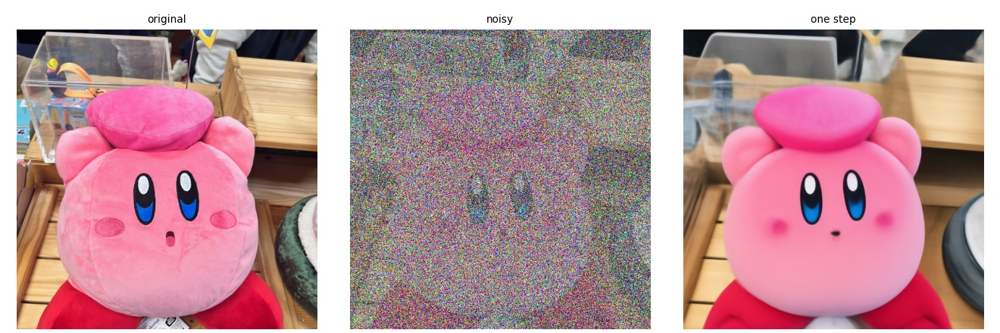
t = 0.25
|
|
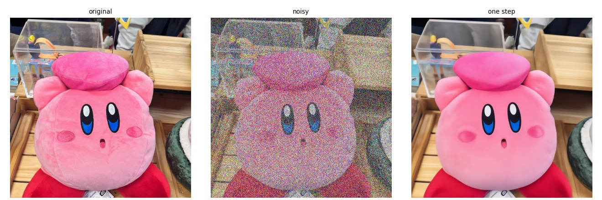
t = 0.50
|
t = 0.75
|
|
One step does far better than blurring. Even at t = 0.25, where the
input is almost all noise, the model recovers a plausible image of Kirby, albeit smoothed and “averaged”.
|
1.4 Visualizing Velocity
Here I compare the model's predicted velocity with the ground truth
vgt = x1 − ε. Both are shown on one shared symmetric RGB scale with zero
at mid-gray. The error map is the per-pixel RMS over RGB of
(1−t)(v̂ − vgt), shown on a fixed linear
scale [0, 0.5] at all three times.
|
|
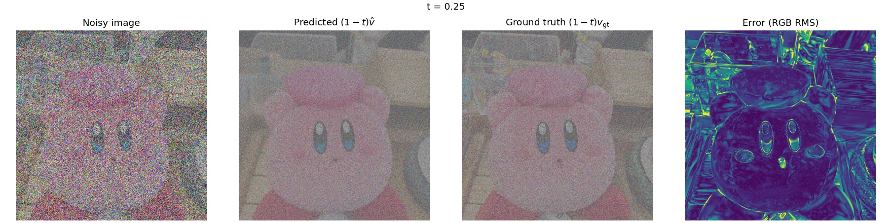
|
|
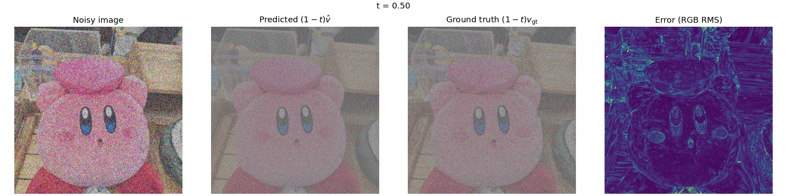
|
|
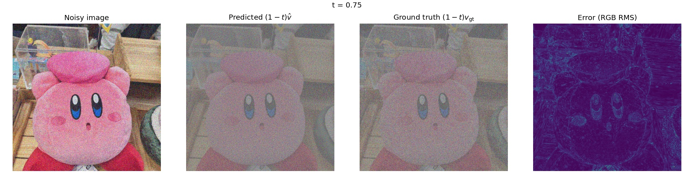
|
1.5 Iterative Denoising with Euler Sampling
Instead of one big jump, I integrate the velocity field with Euler steps,
xt+h = xt + h·v(xt, t),
recomputing the velocity at every step. The last step is shortened so that time lands
exactly on 1.
|
@torch.inference_mode()
def euler_sample(x_start, t_start, step_size, velocity):
x = x_start
states = [(t_start, x_start)]
t = t_start
while t < 1.0:
step_size = min(step_size, 1.0 - t)
x = x + step_size * velocity(x, t)
t += step_size
states.append((t, x))
return x, states
|
|
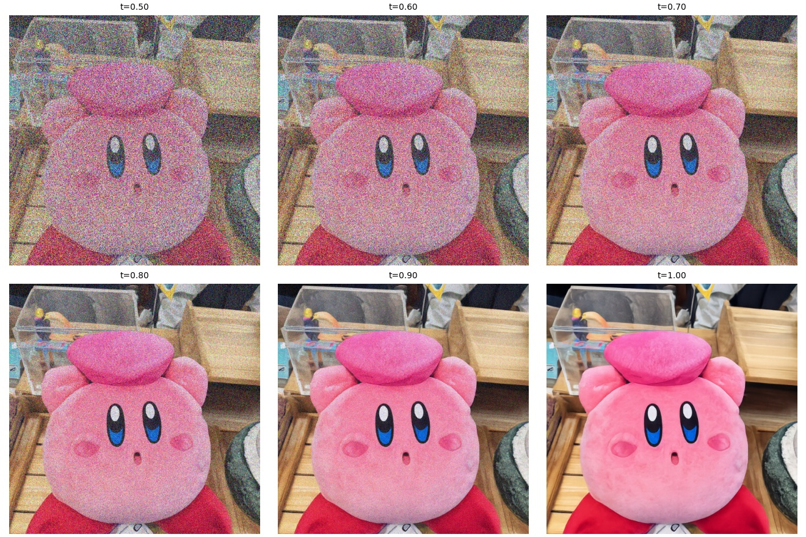
Euler trajectory from t = 0.50: the initial state, every fifth update, and the final image
|
|
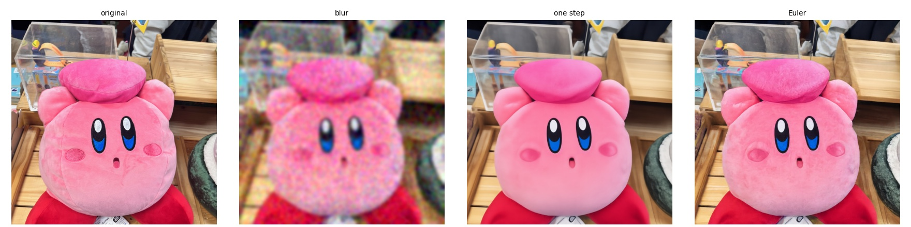
Comparison on the t = 0.50 input: original, Gaussian blur, one step, Euler
|
1.6 Generating Images from Noise
Starting from pure noise at t = 0 and integrating all the way to 1
(50 Euler steps) with the prompt “a high quality photo” generates new
images. Seeds 180–184 are shown below.
|
|
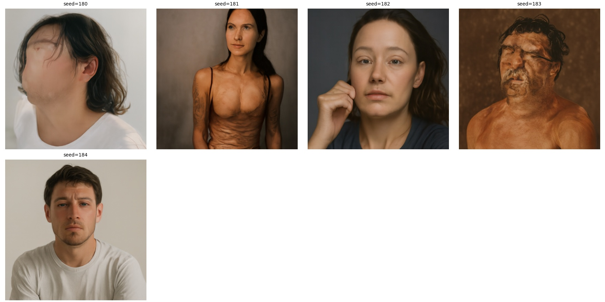
“a high quality photo”, no guidance (seeds 180–184)
|
|
The prompt doesn't name a subject, yet all five samples
are portraits of people. The model seems to have learned that “high quality photo”
mostly goes with portraits. Without guidance, the
results are also often wrong: seed 180 has no face, and seeds 181 and 183 have
distorted, muddy anatomy.
|
2: Conditional Generation and Guidance
2.1 Classifier-Free Guidance (CFG)
CFG runs the model twice per step, once with the prompt (vc)
and once with the empty prompt (vu), and extrapolates away
from the unconditional direction:
vcfg = vc + w(vc − vu). I regenerated the same five seeds with w = 7.
|
def cfg_velocity(x, t, condition, w, predict_velocity, null_condition=''):
cond_vel = predict_velocity(x, t, condition)
uncond_vel = predict_velocity(x, t, null_condition)
return cond_vel + w * (cond_vel - uncond_vel)
|
|
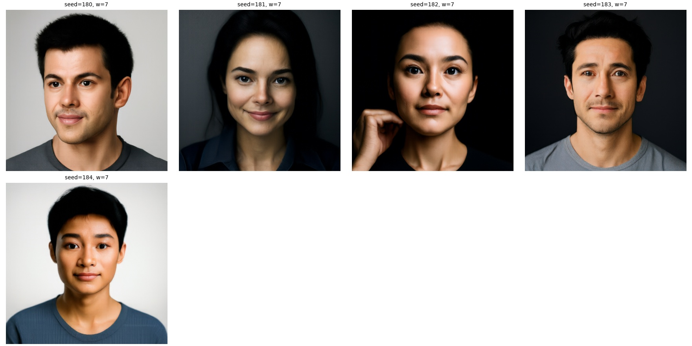
“a high quality photo” with CFG, w = 7 (same seeds and initial noise as 1.6)
|
|
With guidance, the samples are much cleaner. Every face is coherent, with
correct anatomy, good lighting, and high contrast. Seed 182 even keeps the same
hand-on-cheek pose as its unguided version. However, all five images are now
the same centered, front-facing headshots.
|
3: Creative Applications
3.1 Image-to-Image Editing
To edit an image, I noise it to a starting time
tstart with
(1−tstart)ε + tstartx1,
then run the CFG Euler sampler from tstart to 1 with the
prompt “a high quality photo”. I used starting times
0.02, 0.04, 0.06, 0.10, 0.14, 0.25, 0.50.
|
def edit(image, noise, t_start, condition, predict_velocity, w=7, step_size=0.02):
noisy_image = interpolate(image, noise, t_start)
edited_image, _ = euler_sample(
noisy_image,
t_start,
step_size,
lambda x, t: cfg_velocity(x, t, condition, w, predict_velocity)
)
return edited_image
|
|
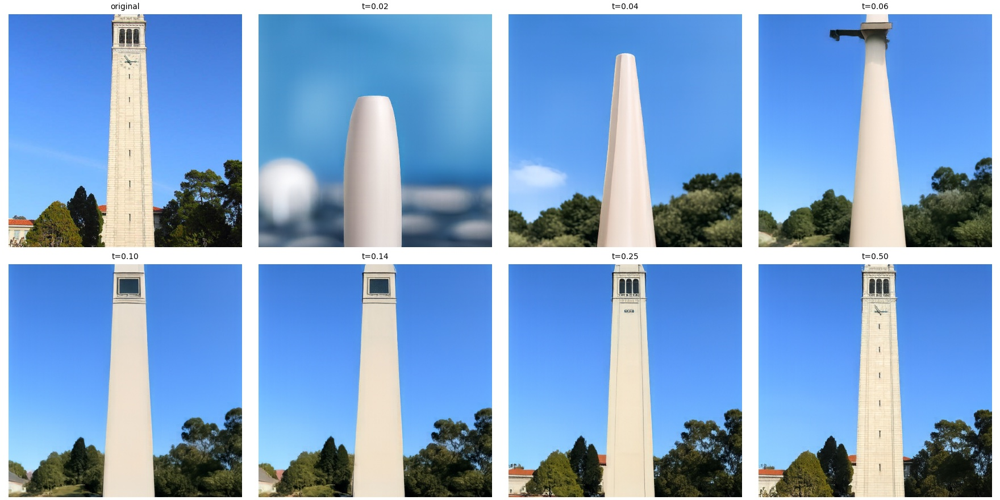
Campanile
|
|
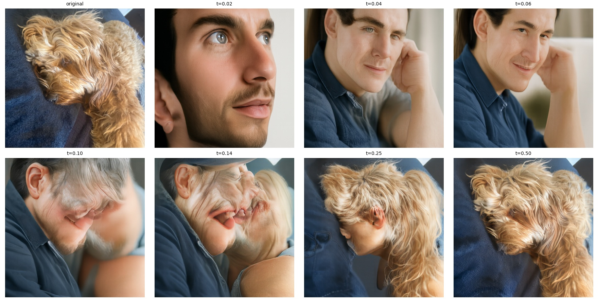
Frankie (my dog/menace to society)
|
|
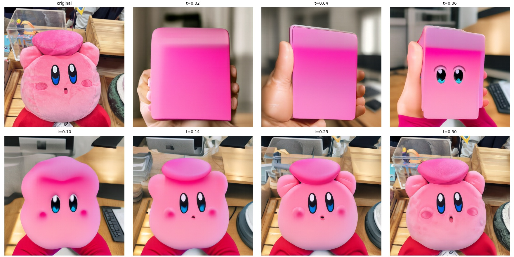
Kirby
|
3.1 Editing Hand-Drawn and Web Images
The same procedure works for non-photographic inputs: a Tom & Jerry frame from
the web, plus two of my own drawings (a Gatorade bottle and a Rubik's cube). Because
the prompt asks for a photo, these edits project cartoons onto the manifold
of realistic images.
|
|
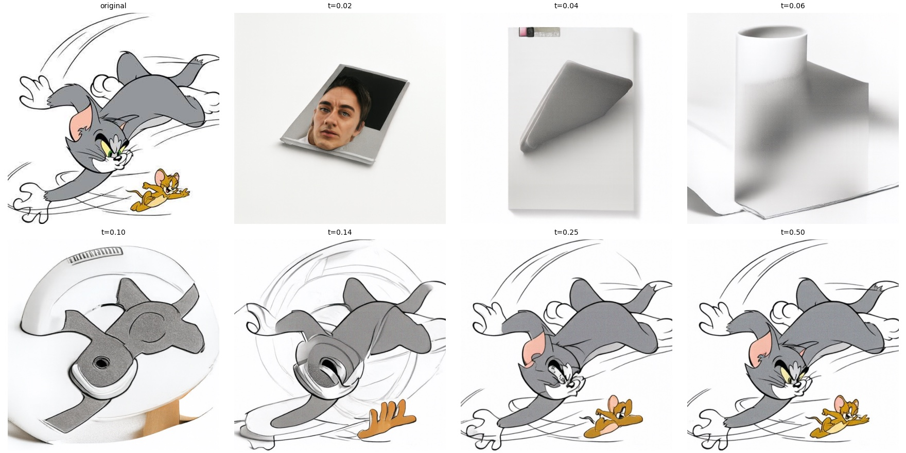
Web image: Tom & Jerry
|
|
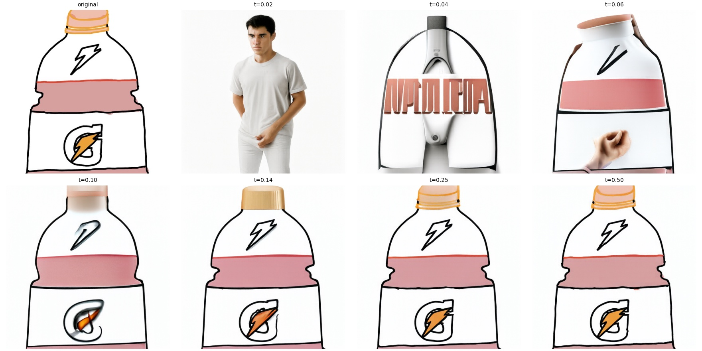
Hand-drawn: Gatorade bottle
|
|
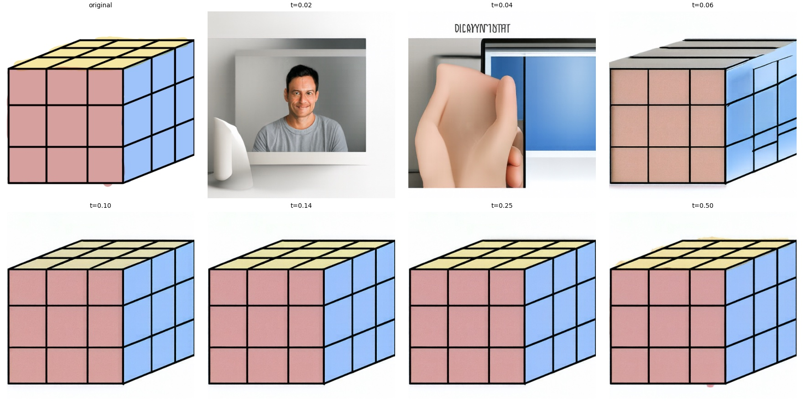
Hand-drawn: Rubik's cube
|
3.2 Text-Guided Image Editing
Replacing the generic prompt with a descriptive one steers the edit toward a target.
Starting times are the same as in 3.1. Prompts:
| Image | Edit prompt |
|---|
| Campanile | “a pencil writing on a page” |
| Frankie | “a cartoon dog lying on a bed” |
| Kirby | “a giant pink planet” |
|
|
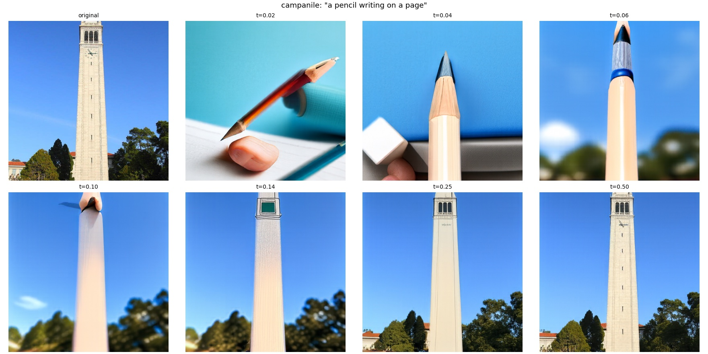
Campanile → “a pencil writing on a page”
|
|
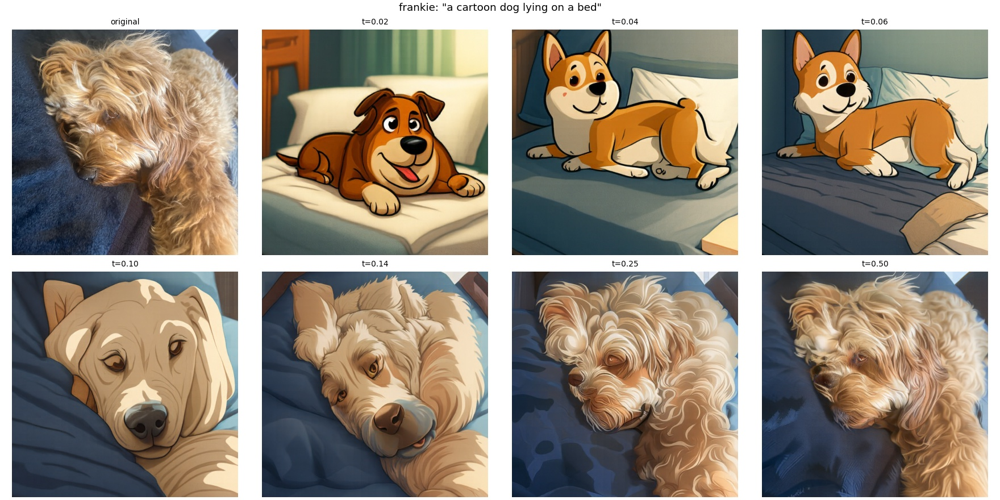
Frankie → “a cartoon dog lying on a bed”
|
|
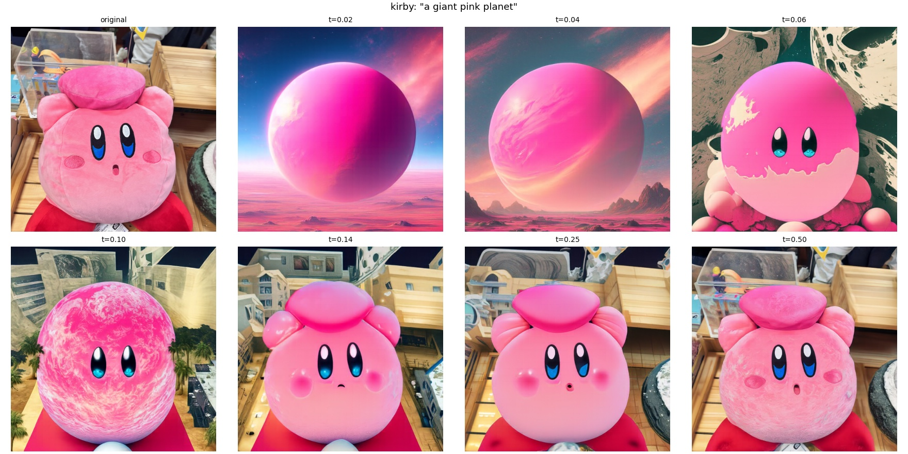
Kirby → “a giant pink planet”
|
3.3 Visual Anagrams
A visual anagram looks like one thing upright and another when rotated 180°. At
each Euler step I compute the CFG velocity for prompt p1 on
the image and the CFG velocity for prompt p2 on the rotated
image (rotated back afterward), then average the two. The sampler then has to make
an image that satisfies both prompts at once.
|
def visual_anagrams(noise, condition_a, condition_b, predict_velocity, w=7, step_size=0.02):
def anagram_velocity(x, t):
up_vel = cfg_velocity(x, t, condition_a, w, predict_velocity)
down_vel = rotate180(cfg_velocity(rotate180(x), t, condition_b, w, predict_velocity))
return (up_vel + down_vel) / 2
anagram_image, _ = euler_sample(noise, 0.0, step_size, anagram_velocity)
return anagram_image
|
|
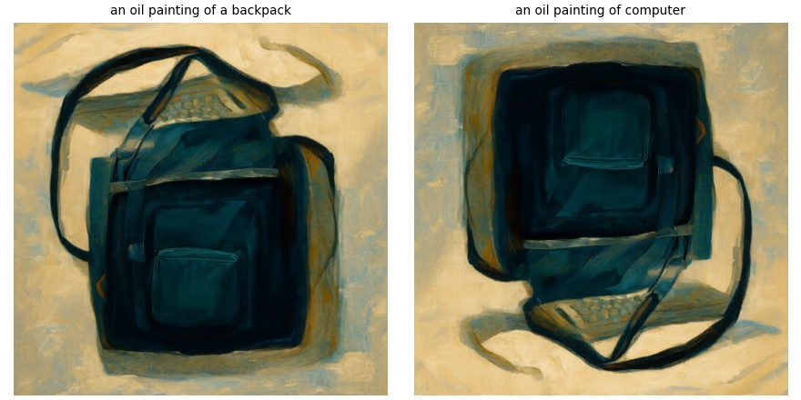
Upright: “an oil painting of an old man” | Rotated: “an oil painting of people around a campfire”
|
|
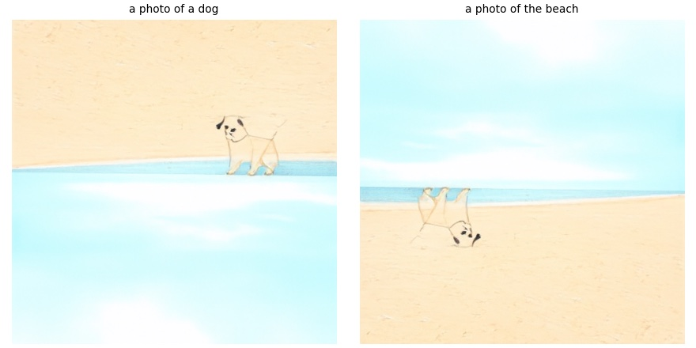
Upright: “a lithograph of a snowy mountain village” | Rotated: “a lithograph of a horse”
|
3.4 Hybrid Images
This is the flow-model version of the hybrid images from Project 2. At each Euler step
I take the low frequencies of the CFG velocity for the distant prompt
p1 and the high frequencies of the CFG velocity for the
close-up prompt p2:
v = LP(v1) + v2 − LP(v2), where
LP is a Gaussian blur with kernel size 265 and σ = 16.
|
def make_hybrids(noise, condition_a, condition_b, predict_velocity, w=7, step_size=0.02):
def hybrid_velocity(x, t):
low_vel = cfg_velocity(x, t, condition_a, w, predict_velocity)
high_vel = cfg_velocity(x, t, condition_b, w, predict_velocity)
return lowpass(low_vel) + (high_vel - lowpass(high_vel))
hybrid_image, _ = euler_sample(noise, 0.0, step_size, hybrid_velocity)
return hybrid_image
|
| Hybrid 1: distant = “a lithograph of a elephant”, close = “a lithograph of a waterfall” |
|
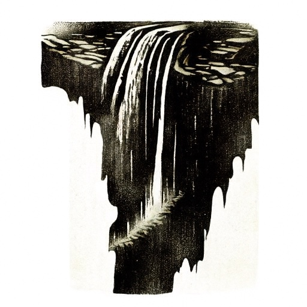
Close view (512×512)
|
Distant view (64×64)
|
Hybrid 2: distant = “a lithograph of a cat”, close = “a lithograph of a house” |
Close view (512×512)
|
Distant view (64×64)
|
Part B: Flow Matching from Scratch
In Part B I implement a UNet in PyTorch and train it on MNIST
(28×28, pixels in [0, 1]). Training starts with a single-step
denoiser and ends with a class-conditioned flow-matching model with classifier-free
guidance. Everything was trained on a Tesla T4 with seed 180.
|
1: Training a Single-Step Denoising UNet
1.1 Implementing the UNet
|
class UnconditionalUNet(nn.Module):
def __init__(self, in_channels, num_hiddens):
super().__init__()
D = num_hiddens
self.conv_block1 = ConvBlock(in_channels, D)
self.down_block1 = DownBlock(D, D)
self.down_block2 = DownBlock(D, 2 * D)
self.flatten = Flatten()
self.unflatten = Unflatten(2 * D)
self.up_block1 = UpBlock(4 * D, D)
self.up_block2 = UpBlock(2 * D, D)
self.conv_block2 = ConvBlock(2 * D, D)
self.conv = nn.Conv2d(D, 1, kernel_size=3, stride=1, padding=1)
def forward(self, x):
x_1 = self.conv_block1(x)
x_2 = self.down_block1(x_1)
x_3 = self.down_block2(x_2)
x_5 = self.unflatten(self.flatten(x_3))
x_6 = self.up_block1(torch.cat((x_3, x_5), dim=1))
x_7 = self.up_block2(torch.cat((x_2, x_6), dim=1))
x_8 = self.conv_block2(torch.cat((x_1, x_7), dim=1))
return self.conv(x_8)
|
1.2 Using the UNet to Train a Denoiser
The denoiser is trained on pairs (z, x) with
z = x + σε, minimizing
‖Dθ(z) − x‖². Below is the
noising process for σ = 0.0, 0.2, 0.4, 0.5, 0.6, 0.8, 1.0.
|
|
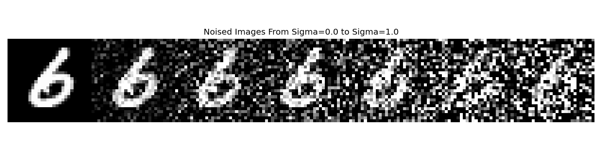
One training digit noised with σ = 0.0, 0.2, 0.4, 0.5, 0.6, 0.8, 1.0 (left to right)
|
1.2.1 Training
I trained the denoiser at σ = 0.5 with hidden dimension
D = 128, batch size 256, Adam with learning rate 1e-4, for
5 epochs.
|
|
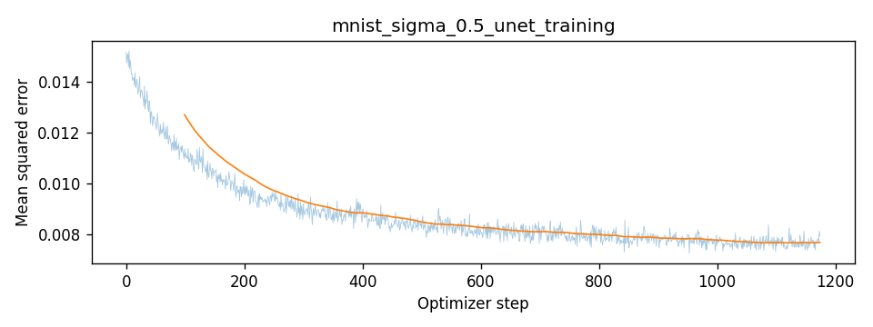
Training loss (σ = 0.5), every optimizer step over 5 epochs; orange is a 100-step moving average
|
|
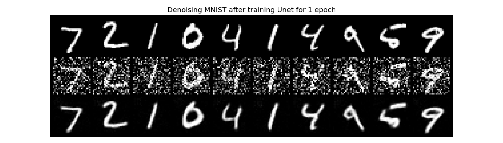
Test set after epoch 1 (rows: clean, noisy σ = 0.5, denoised)
|
|
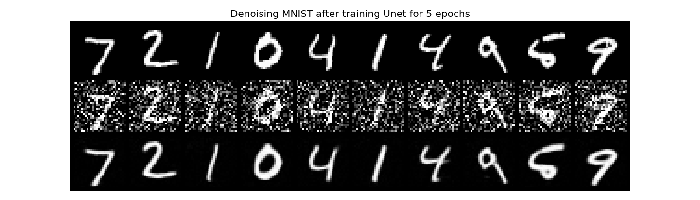
Test set after epoch 5 (rows: clean, noisy σ = 0.5, denoised)
|
|
After just one epoch the outputs are already clean, recognizable digits. After five
epochs the strokes are sharper and the faint gray speckle in the background is gone.
|
1.2.2 Out-of-Distribution Testing
The denoiser was trained only at σ = 0.5. Here I apply it to the
same test digit at other noise levels.
|
Top: noisy input at σ = 0.0, 0.2, 0.4, 0.5, 0.6, 0.8, 1.0. Bottom: denoised output.
|
1.2.3 Denoising Pure Noise
I trained a fresh UNet (same hyperparameters)
whose input is pure Gaussian noise z ~ N(0, I), independent of the
target digit, and asked it to output a clean digit.
|
|
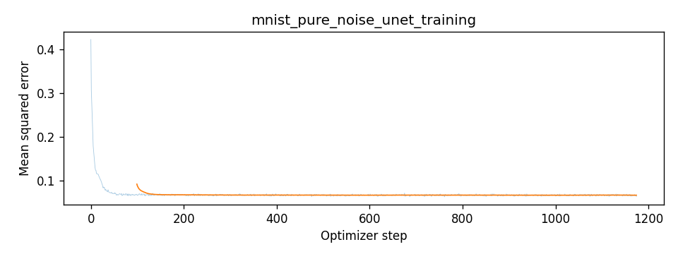
Training loss (pure-noise input)
|
|
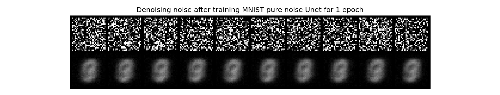
After epoch 1 (rows: noise input, output)
|
|
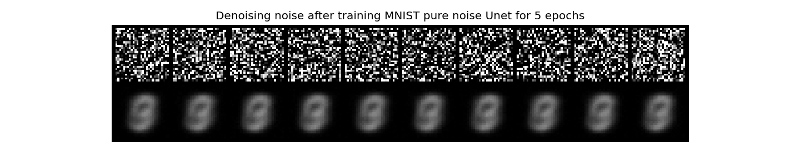
After epoch 5 (rows: noise input, output)
|
|
Every input gives the same blurry gray blob that looks like all ten digits stacked on top of each other. It is roughly an
0/8/3 shape. This happens becuase with an MSE loss, the best prediction is the conditional
mean E[x | z]. Here the input z is independent of the
target x, so E[x | z] = E[x], a.k.a the average of the training
set. The network can't do better than outputting the mean MNIST digit, whatever
noise it gets.
|
2: Training a Flow Matching Model
2.1 Adding Time Conditioning to the UNet
The flow model takes xt = (1−t)x0 + t·x1
(with x0 noise) and predicts the velocity
x1 − x0. To condition on t, two
FCBlocks (Linear → GELU → Linear) embed the scalar
t.
|
def time_fm_forward(unet, x_1, num_ts):
unet.train()
N = x_1.shape[0]
t = torch.rand(N, 1, device=device)
t_img = t.view(N, 1, 1, 1)
x_0 = torch.randn(x_1.size(), device=device)
x_t = (1 - t_img) * x_0 + t_img * x_1
return nn.MSELoss()(unet(x_t, t), x_1 - x_0)
@torch.inference_mode()
def time_fm_sample(unet, img_wh, num_ts, seed=0):
unet.eval()
generator = torch.Generator(device=device).manual_seed(seed)
x = torch.randn(img_wh, generator=generator, device=device)
dt = 1 / num_ts
for i in range(num_ts):
t = torch.tensor([dt * i], device=device)
x = x + dt * unet(x, t)
return x
|
2.2 Training the Time-Conditioned UNet
Hidden dimension D = 64, batch size 64, Adam with initial learning rate
1e-2, and an ExponentialLR scheduler with
γ = 0.11/10 stepped once per epoch, for 10 epochs:
|
|
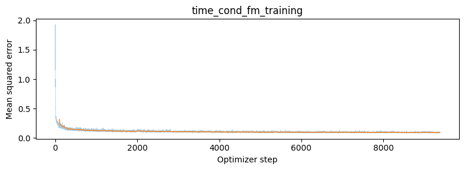
Training loss, time-conditioned flow matching (10 epochs)
|
2.3 Sampling from the Time-Conditioned UNet
Sampling starts from pure noise and takes 50 Euler steps from t = 0 to 1.
All three checkpoints use the same seed, so each grid starts from the same noise.
|
|
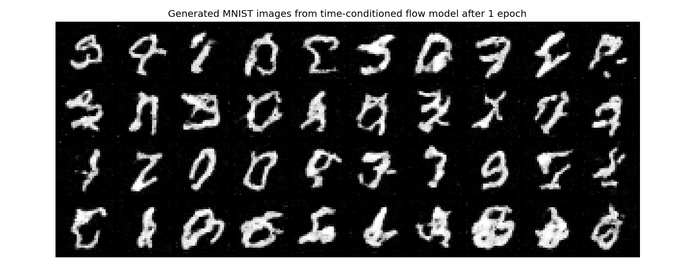
After epoch 1
|
|
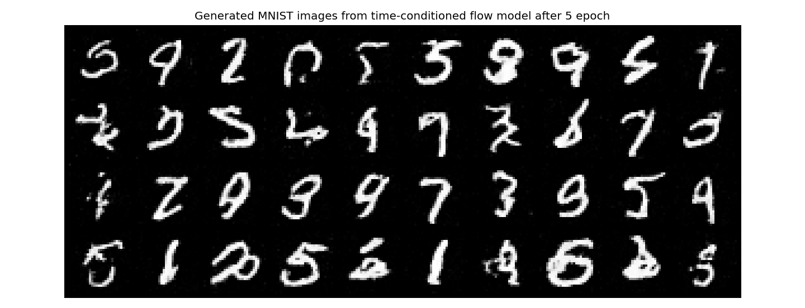
After epoch 5
|
|
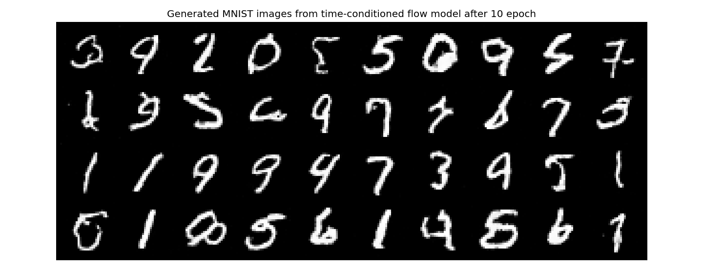
After epoch 10
|
2.4 Adding Class Conditioning
To control the digit, the UNet also takes a one-hot class vector c,
embedded by two more FCBlocks. During training the class is dropped
(zeroed) with probability puncond = 0.1, so one network
learns both the conditional and the unconditional velocity. At sampling time I use
classifier-free guidance,
v = vu + γ(vc − vu) with
γ = 5, over 300 Euler steps.
|
def class_fm_forward(unet, x_1, c, p_uncond, num_ts):
unet.train()
N = x_1.shape[0]
t = torch.rand(N, 1, device=device)
mask = torch.bernoulli(torch.full((N,), p_uncond, device=device))
t_img = t.view(N, 1, 1, 1)
x_0 = torch.randn(x_1.size(), device=device)
x_t = (1 - t_img) * x_0 + t_img * x_1
return nn.MSELoss()(unet(x_t, c, t, mask), x_1 - x_0)
@torch.inference_mode()
def class_fm_sample(unet, c, img_wh, num_ts, guidance_scale=5.0, seed=0):
unet.eval()
generator = torch.Generator(device=device).manual_seed(seed)
x = torch.randn(img_wh, generator=generator, device=device)
dt = 1 / num_ts
for i in range(num_ts):
t = torch.tensor([dt * i], device=device)
cond_vel = unet(x, c, t)
uncond_vel = unet(x, c, t, torch.tensor([0], device=device))
x = x + dt * (uncond_vel + guidance_scale * (cond_vel - uncond_vel))
return x
|
2.5 Training the Class-Conditioned UNet
Same setup as 2.2 (D = 64, batch size 64, Adam with initial learning
rate 1e-2, exponential decay with γ = 0.11/10,
10 epochs), plus class dropout puncond = 0.1.
|
|
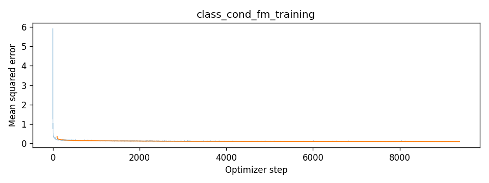
Training loss, class-conditioned flow matching with exponential LR scheduler (10 epochs)
|
2.6 Sampling from the Class-Conditioned UNet
Each grid shows four samples of each digit 0–9 in order, with a fixed seed per
class (180 + c), so the grids can be compared across epochs.
|
|
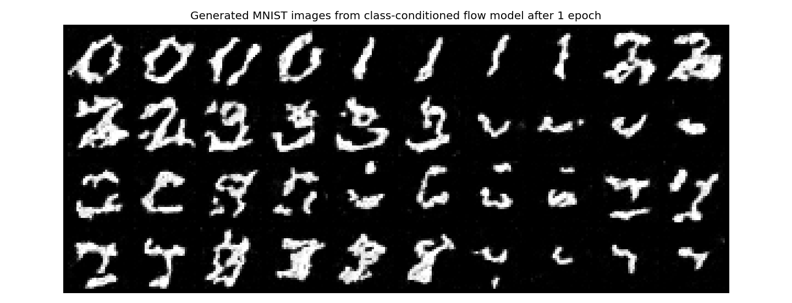
After epoch 1 (with scheduler)
|
|
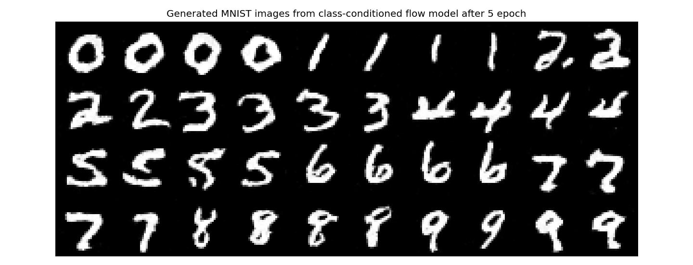
After epoch 5 (with scheduler)
|
|
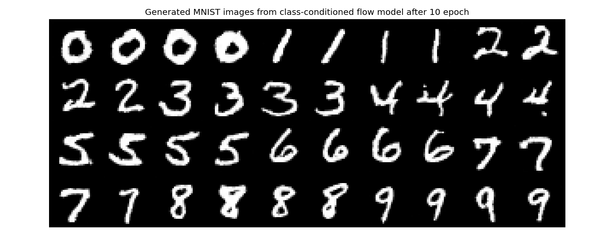
After epoch 10 (with scheduler)
|
|
Removing the learning-rate scheduler
To drop the exponential scheduler without losing quality, I trained a separate model
with a constant learning rate of 1e-3 and all other
settings unchanged.
|
|
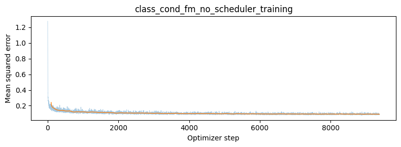
Training loss, class-conditioned, constant LR = 1e-3 (no scheduler)
|
|
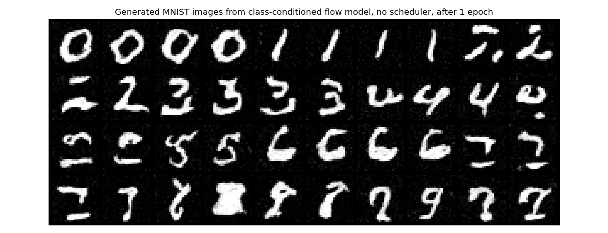
No scheduler, after epoch 1
|
|
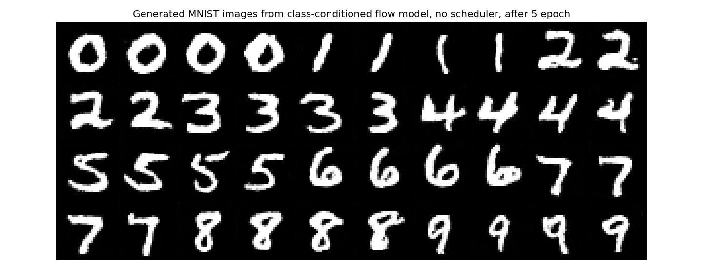
No scheduler, after epoch 5
|
|
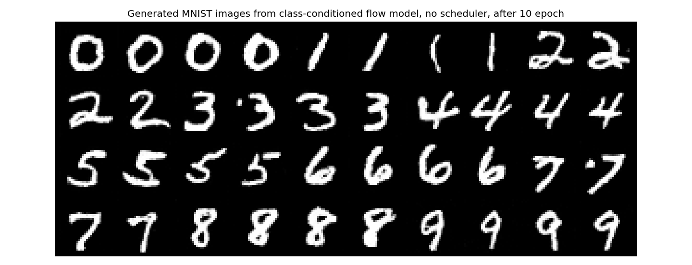
No scheduler, after epoch 10
|
|